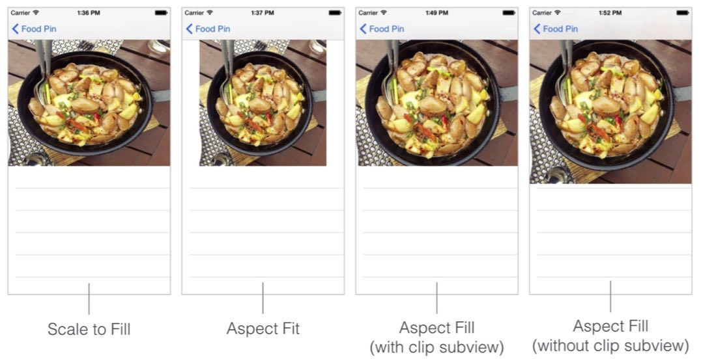

使用Swift进行iOS编程知识点总结第三篇，主要包括Navigation Bar的导入和Appearance的自定义、状态栏的样式自定义、Segue的基本使用和通过Segues在两个View Controller间传递数据。
关联阅读：
Study iOS 9 Programming with Swift（1）
Study iOS 9 Programming with Swift（2）
Study iOS 9 Programming with Swift（3）
目录
- 目录
- 更新记录
- 导航栏的引入
- 导航栏外表的自定义
- 对于某个View在滑动时隐藏导航栏
- 调整状态栏的样式
- Segue的类型
- 通过Segues传递数据
- UIImageView的几种模式
- Content Hugging Priority
- Self Sizing Cells
更新记录
- 2016/08/31 第一次发布
导航栏的引入
- 引入导航栏的方式：Select the table view controller and click "Editor" in the menu. Choose "Embed in" > "Navigation Controller".
- 选中引入导航栏的View Controller可以设置导航栏中的title。
导航栏外表的自定义
- 在AppDelegate.swift文件中的application(_:didFinishLaunchingWithOptions:)方法中添加以下代码可以自定义导航栏的Appearance。
- 代码片段：
// 自定义导航栏的背景色
UINavigationBar.appearance().barTintColor = UIColor(red: 207.0/255.0, green: 0.0/255.0, blue: 15.0/255.0, alpha: 0.9)
// 自定义导航栏的导航button及文字、其他导航栏按钮元素的颜色
UINavigationBar.appearance().tintColor = UIColor.whiteColor()
// 自定义导航栏title文字的样式，包括字体、字号、颜色等等
UINavigationBar.appearance().titleTextAttributes = [NSForegroundColorAttributeName:UIColor.whiteColor()]
// 以下代码自定义了导航栏title文字的字体、字号、颜色，iOS SDK自带字体的名称可在http://iosfonts.com/查看
if let barFont = UIFont(name: "PingFangSC-Semibold", size: 20.0) {
UINavigationBar.appearance().titleTextAttributes = [NSForegroundColorAttributeName:UIColor.whiteColor(), NSFontAttributeName:barFont]
}
- 若想移除导航栏back button后的title，可以在souce view controller中的viewdidload方法中添加以下代码：
// Remove the title of the back button
navigationItem.backBarButtonItem = UIBarButtonItem(title: "", style: .Plain, target: nil, action: nil)
- 在导航栏上显示上级table view中对应cell的标题，在destination view controller中的viewdidload方法中添加以下代码：
// 将发现页选择的cell的标题显示在导航栏上
title = movie.name
对于某个View在滑动时隐藏导航栏
- 因为viewDidLoad方法只会在view初次创建时被调起一次，所以不能使用使用此方法来隐藏导航栏。可以使用viewWillAppear方法，此方法在view每次展示时都会被调起。
- 在Table View Controller添加以下代码：
// view每次展示时都会被调起
override func viewWillAppear(animated: Bool) {
super.viewWillAppear(animated)
// 向下滑动时隐藏导航栏
navigationController?.hidesBarsOnSwipe = true
}
- 在Detail View Controller添加以下代码：
override func viewWillAppear(animated: Bool) {
super.viewWillAppear(animated)
// 滑动时不隐藏导航栏
navigationController?.hidesBarsOnSwipe = false
// 设置导航栏为不可隐藏。第一个页面隐藏了导航栏之后，防止进入详情页不显示导航栏。
navigationController?.setNavigationBarHidden(false, animated: true)
}
调整状态栏的样式
- Status Bar有两种样式：Light和Dark。
- 若想改变某个view controller的Status Bar样式，可以添加以下代码：
override func preferredStatusBarStyle() -> UIStatusBarStyle {
return .LightContent
}
- 若想改变app全局的Status Bar样式，有两步需要做。第一步：Select the project in the project navigator. Under the Info tab of the FoodPin target, insert a new key named View controller-based status bar appearance and set the value to NO。第二步在AppDelegate.swift文件中的application(_:didFinishLaunchingWithOptions:)方法中添加以下代码：
// 自定义全局的Status Bar为Light Style
UIApplication.sharedApplication().statusBarStyle = .LightContent
Segue的类型
- Segue是连接两个View Controller的桥梁，在iOS9之后定义了下面几种Segue的类型
- Show - when the show style is used, the content is pushed on top of the current view controller stack. A back button will be displayed in the navigation bar for navigating back to the original view controller. （这种类型是有导航栏的）
- Show detail - similar to the show style, but the content in the detail (or destination) view controller replaces the top of the current view controller stack. （没有导航栏）
- Present modally - presents the content modally. When used, the detail view controller will be animated up from the bottom and cover the entire screen on iPhone. （类似的例子是日历中添加Event时的效果。）
- Present as popover - Present the content as a popover anchored to an existing view. Popover is commonly found in iPad apps. （多用于iPad）
通过Segues传递数据
- Segue起着连接作用，在从一个View Controller到另一个时，可以在SourceViewController中使用prepareForSegue方法来传递数据。
- 思路：为Segue定义一个独一无二的可识别的名称→确定选择的哪一行→确定目标ViewController→传递数据。
- 代码片段：
// 向DetailViewController传递信息
override func prepareForSegue(segue: UIStoryboardSegue, sender: AnyObject?) {
// 通过已经定义的segue这个桥梁来传递信息
if segue.identifier == "showMovieDetail" {
if let indexPath = tableView.indexPathForSelectedRow {
let destinationController = segue.destinationViewController as! MoiveDetailViewController
destinationController.movieBackgroudImage = movieImages[indexPath.row]
destinationController.movieImage = movieImages[indexPath.row]
destinationController.movieName = movieNames[indexPath.row]
destinationController.movieType = movieTypes[indexPath.row]
destinationController.movieYear = movieYears[indexPath.row]
destinationController.movieActor = movieActors[indexPath.row]
}
}
}
UIImageView的几种模式
UIImageView有几种常用的模式如下，在使用时注意选择：
- Scale to Fill (默认的模式，会把图片拉伸到指定的尺寸，不能保证图片的原始比率)
- Aspect Fit （可以保持图片的原始比率，但是会在imageview中留下空白）
- Aspect Fill （保持图片的原始比率的前提下不会留下空白，但会切掉图片四周的一些细节，注意使用此模式时要开启“Clip Subviews”，否则图片会扩展到其他view中去。）

Content Hugging Priority
- 对于一个Stack View中的多个view，为了满足指定的constraints，会把某些view拉伸，而拉伸的优先级由Content Hugging Priority定义。Content Hugging Priority的数值越大，级别越高，不会被拉伸。
Self Sizing Cells
- 设置好cell的Constraints后，并且要把Cell的number of lines的值设置为0，在viewDidLoad方法中添加以下代码：
tableView.estimatedRowHeight = 36.0
tableView.rowHeight = UITableViewAutomaticDimension